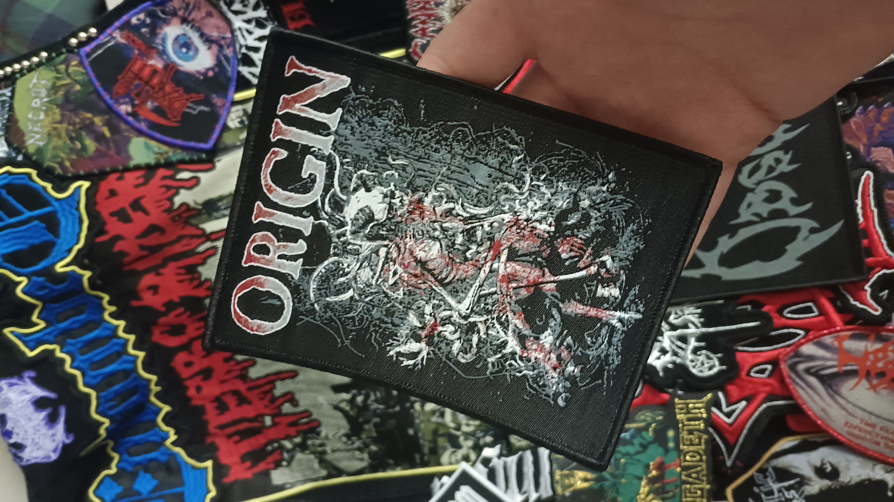
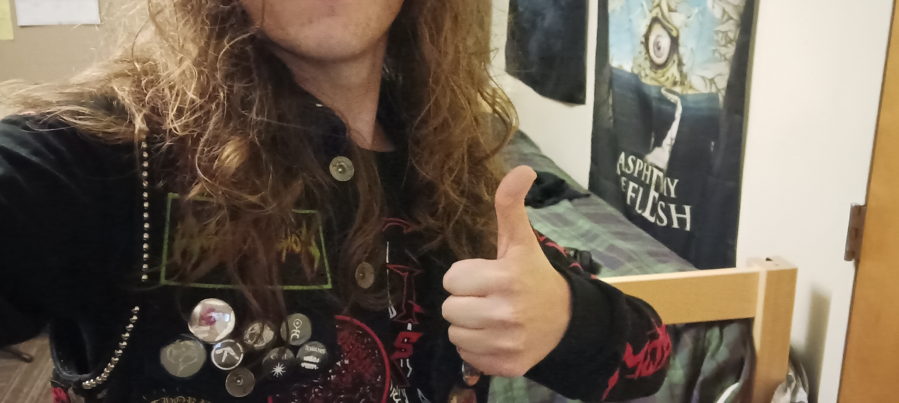
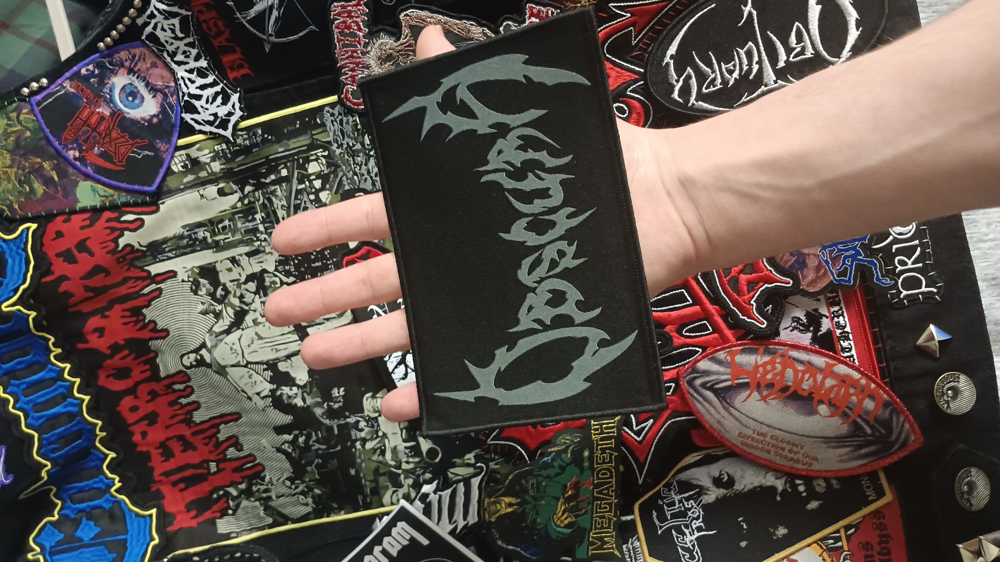
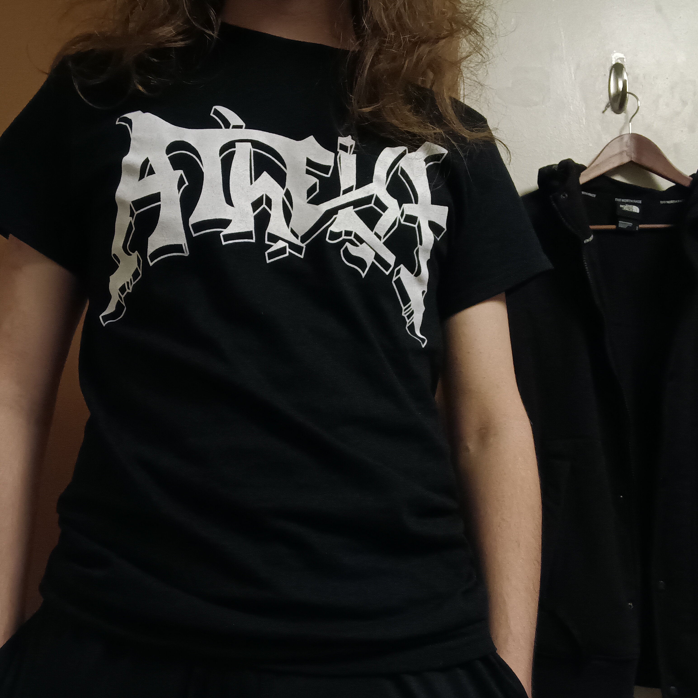
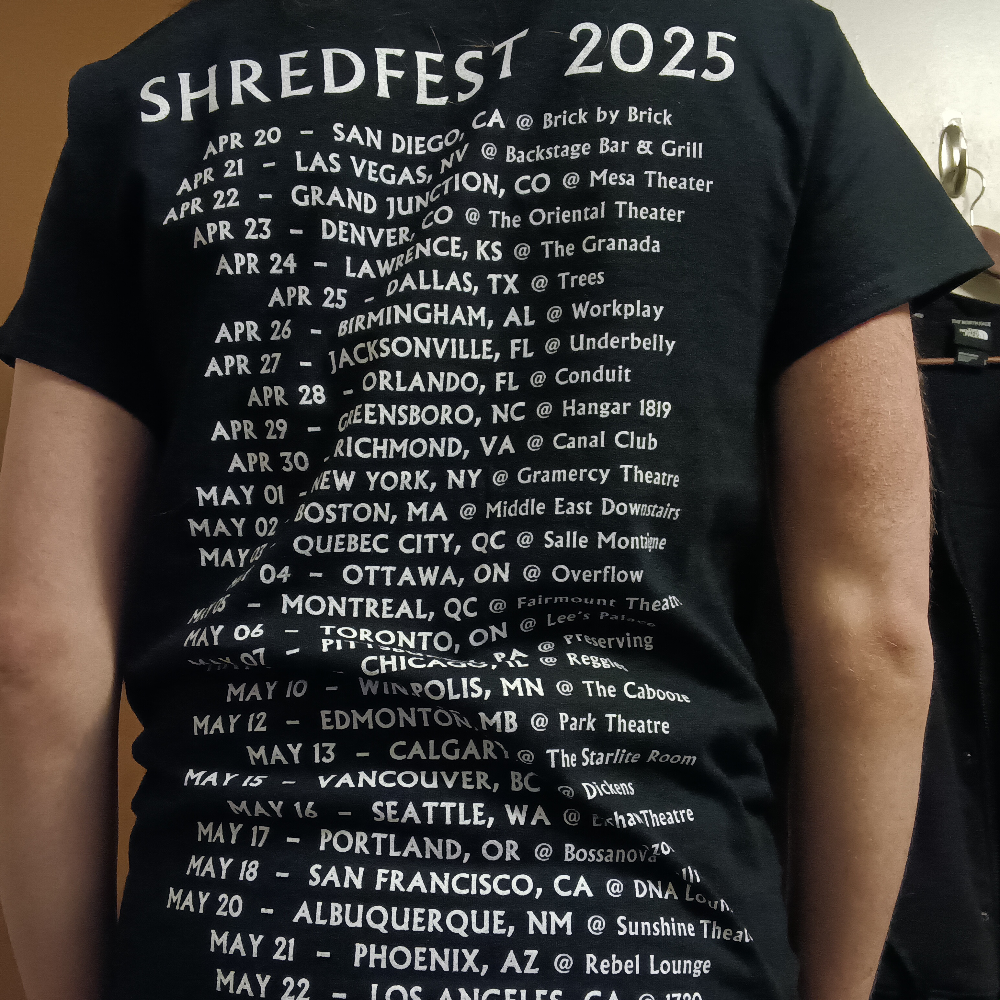

May 16th, 2025

This was another show that I was on the fence about--not because of the bands that were playing, but because I wasn't absolutely dying to go or anything, and I was busy at the time and although I had planned for it in advance (which amounted to nothing more than writing the date down somewhere, really), it kind of snuck up on me. In the end, I decided to go, and I bought the tickets just a couple hours before the show started. I had a special reason for going to this one. Over the past few weeks I had been working myself up to tell my friend, N****, that I liked her. She had also invited me to binge the Final Destination series with her and her friends (in anticipation of the new one, Bloodlines) that evening, but I figured that if asking her out didn't go well, it would be best to not show up to that. They planned to meet up at the same time the show started, so it wouldn't be possible to do both, but again, it was probably gonna be one or the other regardless. The show would serve as a backup plan and something immediate to help me cope if I didn't get the answer I was hoping for.
Anyways, the two of us were looking at apartments together that day, and the whole time I was waiting for the right opportunity. We even spent several minutes alone at a bus stop, but I couldn't do it then; if it didn't go well, there would be a long an awkward bus ride back to campus. We got back and stopped at the dining hall, but I didn't bring it up there either, because it was in public (I ended up telling her in public anyway, but at the time it didn't feel right). Eventually, she had to hurry over to the next bus for an event or something, and it was there that I figured it was now or never. So I stopped her there and told her I had a crush on her (I could barely get it out, but I did). She had this awkward/uncomfortable smile and blank look on her face, and she just said she'd text me in a minute, so I assumed the worst. I did wait about 20 minutes for her response, but it didn't come, so I took off for Seattle like a bat out of hell.
My car was fixed, although it had a random flat tire recently that hadn't been looked at (it was filled, but not checked for a leak; later on I would come to find that there was a slow leak), so I was taking a bit of a chance driving to Seattle. But I definitely needed to go. I bought a ticket to the show, got my battle vest and earplugs, and after forgetting my car keys and having to go back and get them, I was on the road. The car drove a bit rough and there was a funny smell, so I ended up pulling over and calling my mom to ask about it, but as it turned out, the I-5 is just a rough road and the smell was coming from other cars, so it was okay. A state trooper actually pulled up behind me to check in. Soon I was back on the road, and about 80 min into my drive, N**** responded. Without getting too far into the weeds, she liked me back, although there were some complications. I wanted to pull over and respond, but there wasn't really a safe place to do so, so I wasn't able to get back to her for another hour after I pulled into the parking lot next to El Corazon. Once I set my response to her, I got out of my car and headed inside. Sadly, I did miss the opener, Fractal Universe (which was a shame, because for the rest of the show people were talking about how good they were), but I saw every other band.
Decrepit Birth was an interesting one. The vocalist seemed quite old, I think he said he was in his 60s, and in between songs he'd complain about the crowd not moshing hard enough and stupid stuff like that, reminding us several times that this is death metal and not for pussies or whatever. It was kind of annoying. I'm not a mosher (yet) but I was headbanging at least, and I kept it up and put a little more oomf into it because at first I kinda saw what he meant. The tech death crowd seemed a little more mellow than what I was used to at other death metal shows. Plus a lot of openers don't get as much energy from the crowd as they deserve. But after a while his complaining got kind of annoying and I just stopped caring. It wasn't that I wasn't down to headbang super crazy and stuff like that, it's just the music wasn't really making me feel that way. I feel like it may have been the case for the rest of the crowd. Anyways, towards the end of the set he said he was sorry for being an ass and bumming everyone out--then he said not actually, because "this is death metal." So the show went on, and he apologized for a second time at the end and seemed to be feeling sorry for himself or something. I think what could've been a decent show was kind of ruined by the vocalist being kind of obnoxious.

After the Decrepit Birth set (I think; I may have done this before the set but I'm not sure), I went and grabbed merch. I got a really sick Origin patch (they had a few available, but I picked the coolest), although it was $15 which was kind of a lot for one normal sized patch. Then I got an Obscura patch, though there was only one very unnecessarily large logo patch to choose from. At the time of writing this, I think I've found a way to fit it on my vest, but it took some effort. At least the Obscura patch was cheaper though. Then, later on in the show I think I went back and grabbed an Atheist tour shirt. They didn't have patches sadly, and I wanted to give them some of my money and have a cool souvenir. I think it's honestly one of the better tour shirts I have. A lot of tour shirt art isn't amazing in my opinion, but this Atheist shirt is just a white logo on a black background with the dates on the back. It's minimalist, but in a cool way.
About 45 min after I last texted N****, I got a response from her. I wasn't really able to respond, since I didn't like having my phone out during the show, but by then we had been having long delays between messages from both of us anyway, so I figured it was alright. Though I got another text from her at 9:51 asking where in Seattle I went, and I felt obligated to answer that one as soon as I could.
Next up was Origin, and damn, they were good. First of all, I was pleasantly surprised to see that the same guy from Psycroptic, who I had seen a few months prior, was fronting Origin now. It took me a few minutes to figure it out, though. He did a good job rolling with the blunder from Decrepit Birth, though; he was sort of just like "have you learned nothing....from the wisdom of Decrepit Birth?" in kind of a tongue-in-cheek manner. It's hard to explain, but it worked as kind of a smooth transition into Origin's set and a little something to get people back in the mood. Anyways, I wasn't familiar with Origin before the show, but I liked a lot of the songs they played. I stood in front of the bassist, and his fingers were moving so fucking fast it was unbelievable. It was a great set all things considered.
After Origin came Atheist, which was the band who piqued my interest in the show in the first place, mainly because I'm always on the lookout for those old school death metal bands coming through town every once in a while. I never really got into Atheist that much besides one or two songs, but I was still happy to see them. Only the vocalist was left, it seemed, and all the other members were much younger. But the energy was great; just like Obituary several months prior, the guys at Atheist seemed to be full of energy and having a good time.
Finally, there was Obscura. I was a bit on the fence about going to a show with them in the first place, because earlier in the year (or maybe in late 2024, I don't remember) I heard a little bit of news that some infighting had happened in the band and the guitarist kicked everybody else out, or something like that. I watched a YouTube video about it, and it painted the guitarist as having kind of an ego. I'm not well-versed enough in the behind-the-scenes of Obscura, but I do know that they put on a good show. I don't remember any moments that stood out to me in particular, but I do remember there being plenty of parts that I enjoyed.
During this set, N**** texted me again to ask where I had gone to in Seattle, and I felt obligated to reply to that as soon as I could. I was sort of back and forth between trying to type, giving up, trying again, etc., because I didn't want to have my phone out with people behind me and stuff like that. But I ended up getting a text sent by 10:30, and I apologized for my late reply and said that I was at a concert so it was hard to concentrate on sending a text. She was fine with it. The show was over right around 11:00, and then I took off for the long drive back to Bellingham. I got back around 1:30 am, and I actually ran into N****'s friends in the lounge wrapping up the last Final Destination movie. I got some water and retreated to my dorm. I texted N**** about it soon after, and as it turns out she was in there too but she panicked and hid when she saw me coming. I thought it was kind of cute.



